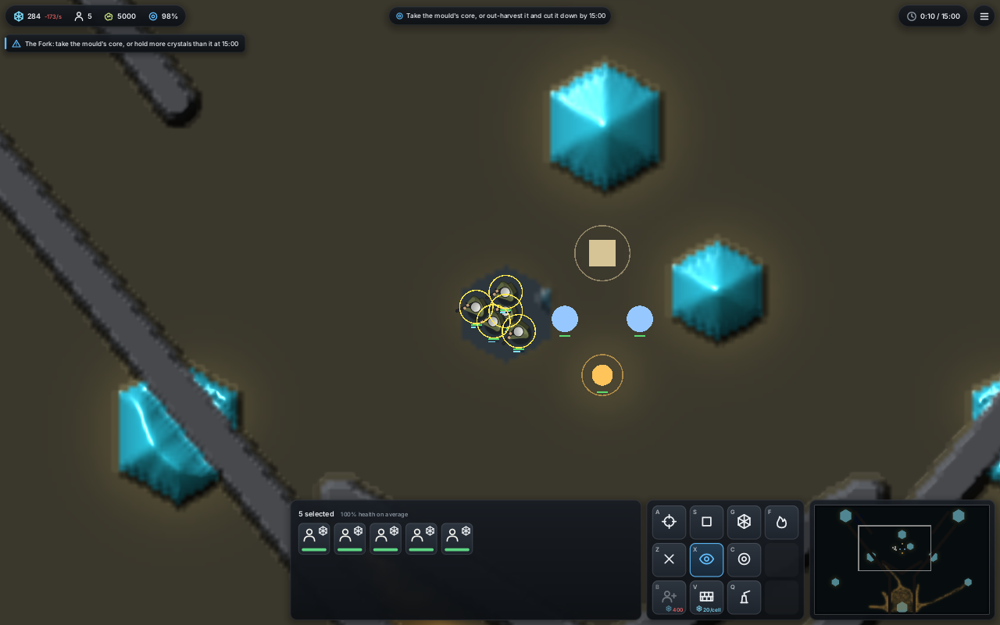
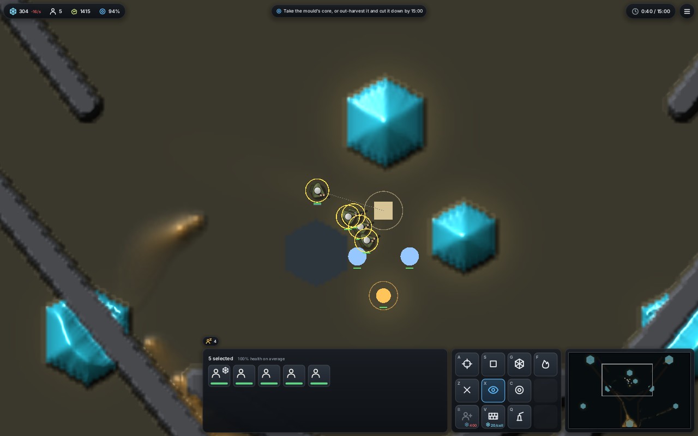
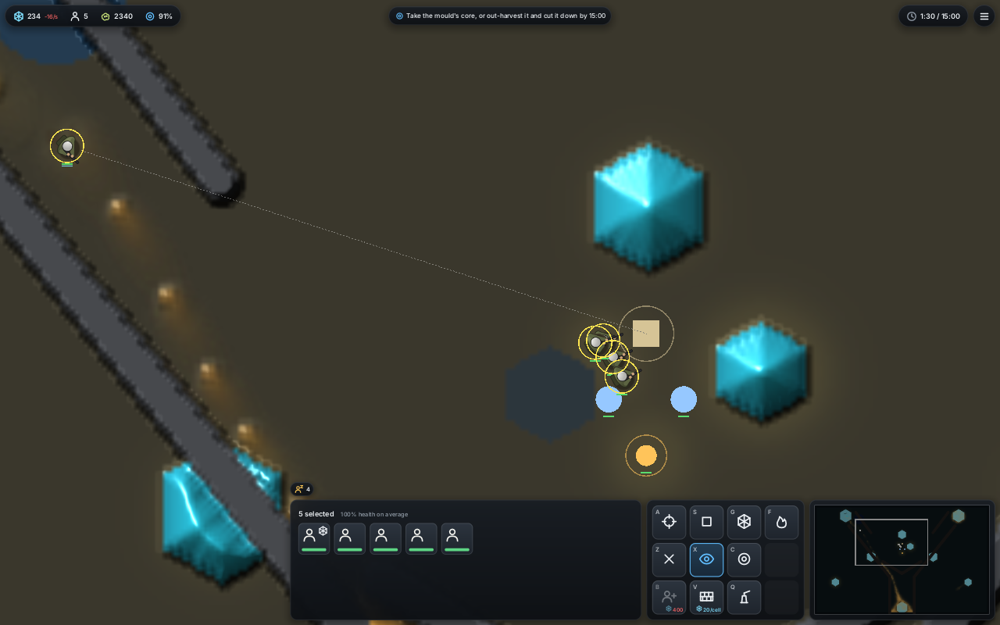
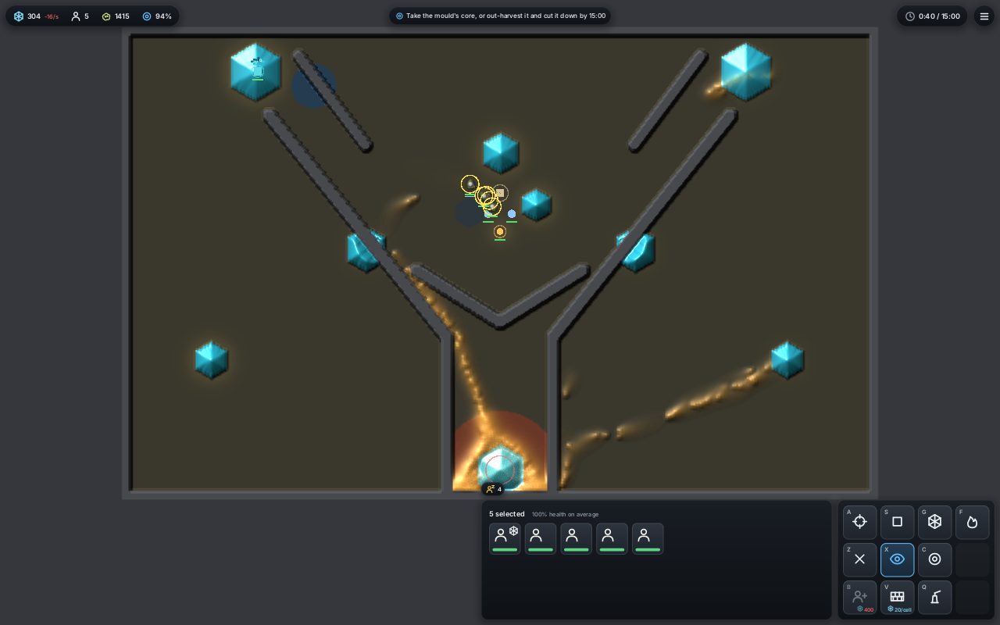
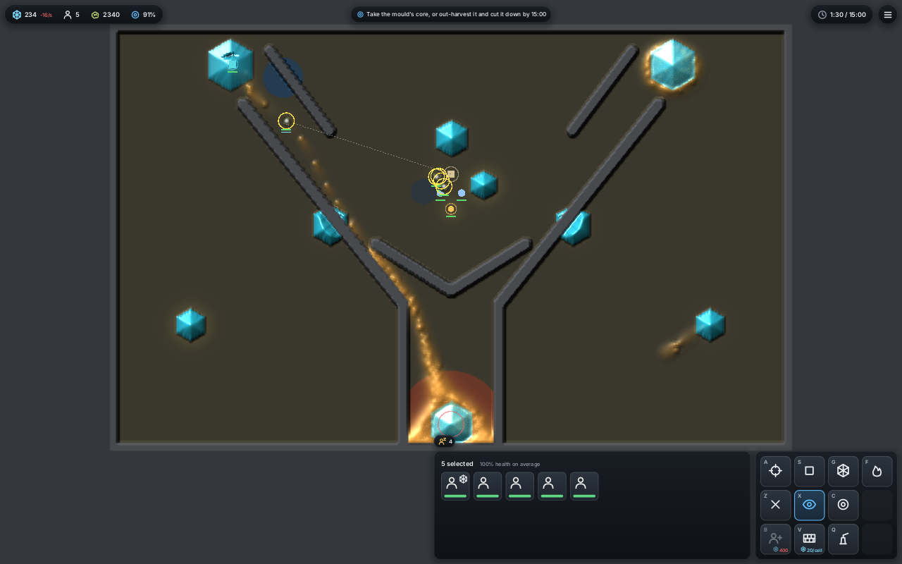
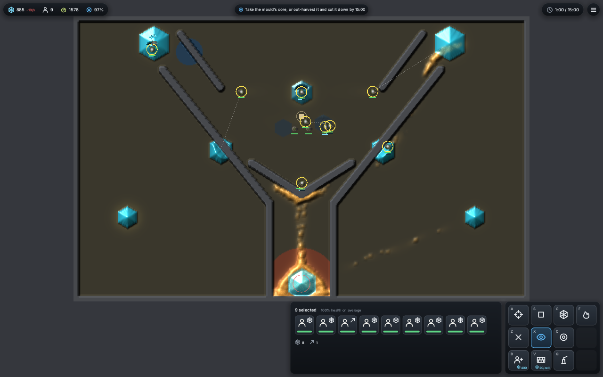
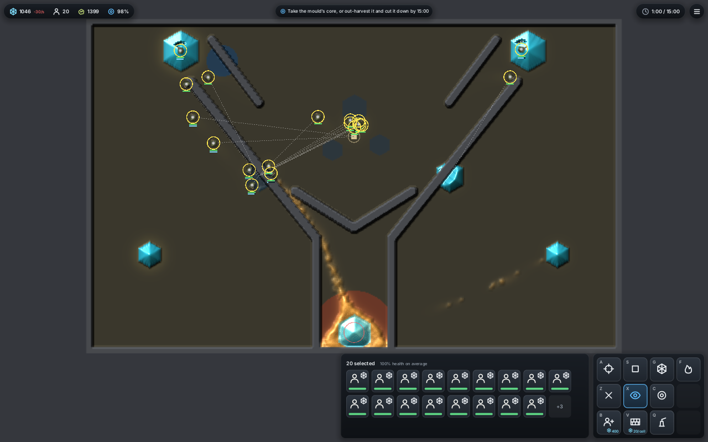

<title>Larder World Buildings</title>
<meta name="claude:viewport-fit-sides" content="cover">
<link rel="stylesheet" href="https://fonts.googleapis.com/css2?family=Space+Grotesk:wght@500;700&family=Inter:wght@400;600&family=JetBrains+Mono:wght@400&display=swap">
<style>
/* Layout: one reading column; pictures full width with their counts in a mono strip beneath. */
:root {
  --bg: #f3f5f2; --fg: #1b231d; --muted: #5d6a60; --line: #d3dbd4; --card: #ffffff;
  --accent: #2f7d5b; --good: #2f7d5b; --bad: #b0472f;
  --display: "Space Grotesk", system-ui, sans-serif;
  --body: "Inter", system-ui, sans-serif;
  --mono: "JetBrains Mono", ui-monospace, monospace;
}
@media (prefers-color-scheme: dark) { :root:not([data-theme="light"]) {
  --bg: #121815; --fg: #e3ebe5; --muted: #95a59a; --line: #2b362f; --card: #19211c;
  --accent: #6cc59a; --good: #6cc59a; --bad: #e08a74; color-scheme: dark } }
:root[data-theme="dark"] {
  --bg: #121815; --fg: #e3ebe5; --muted: #95a59a; --line: #2b362f; --card: #19211c;
  --accent: #6cc59a; --good: #6cc59a; --bad: #e08a74; color-scheme: dark }
body { background: var(--bg); color: var(--fg); font: 15px/1.6 var(--body);
  padding-left: max(16px, env(safe-area-inset-left, 0px)); padding-right: max(16px, env(safe-area-inset-right, 0px)); padding-block: 32px 64px; }
main { max-width: 980px; margin: 0 auto; display: grid; gap: 28px; }
h1, h2 { font-family: var(--display); text-wrap: balance; margin: 0; line-height: 1.2; }
h1 { font-size: 2rem; }
h2 { font-size: 1.3rem; }
p { margin: 0; max-width: 68ch; }
section { display: grid; gap: 12px; min-width: 0; }
.lede { color: var(--muted); }
figure { margin: 0; display: grid; gap: 6px; }
figure img { width: 100%; border-radius: 6px; border: 1px solid var(--line); display: block; }
figcaption { font: 12.5px/1.5 var(--mono); color: var(--muted); white-space: pre-wrap; }
.pair { display: grid; grid-template-columns: 1fr 1fr; gap: 12px; }
@media (max-width: 700px) { .pair { grid-template-columns: 1fr; } }
.scroll { overflow-x: auto; }
table { border-collapse: collapse; font-size: 13.5px; font-variant-numeric: tabular-nums; min-width: 640px; width: 100%; }
th, td { text-align: right; padding: 6px 8px; border-bottom: 1px solid var(--line); }
th:first-child, td:first-child, td.l { text-align: left; }
th { font-weight: 600; color: var(--muted); font-size: 12px; letter-spacing: .03em; }
td.best { color: var(--accent); font-weight: 600; }
.kinds { display: grid; grid-template-columns: repeat(auto-fit, minmax(170px, 1fr)); gap: 10px; }
.kind { background: var(--card); border: 1px solid var(--line); border-radius: 6px; padding: 10px 12px; display: grid; gap: 4px; min-width: 0; }
.kind b { font-family: var(--display); }
.kind span { color: var(--muted); font-size: 13px; }
</style>
<main>
<header style="display:grid;gap:8px">
  <h1>Larder World Buildings</h1>
  <p class="lede">Turret, lure, pump, outpost and wall, each a unit of the squad frame that does not move, so they play the same on the CPU and the GPU. Pictures from the window on the fork map (software Vulkan), counts from the same run; then the census of plans that build.</p>
</header>

<section>
  <h2>What each building does</h2>
  <div class="kinds">
    <div class="kind"><b>Turret</b><span>Fires a shot at the densest mould in 15 cells every 0.5 s. Its hits lay the Swarmer's alarm. 500 food, 300 hp.</span></div>
    <div class="kind"><b>Lure</b><span>Smells of food, 8x a soldier over 6 cells, burning 2 food a second while on. 300 food, 150 hp.</span></div>
    <div class="kind"><b>Pump</b><span>Sits on a crystal and drains 5 food a second into the bank. 500 food, 200 hp.</span></div>
    <div class="kind"><b>Outpost</b><span>A second depot. It smells of the bank, and mould touching it steals. 400 food, 300 hp.</span></div>
    <div class="kind"><b>Wall</b><span>The old wall as a building kind; its cells go into the world once whole.</span></div>
  </div>
  <p>The mould wears down any building it touches, ghosts too, the same way it wears soldiers.</p>
</section>

<section>
  <h2>The fork map with two turrets, a lure and a pump</h2>
  <p>The blue discs are turrets, the orange disc is the lure, and its ring shows it is working. The pump sits on the nearest big crystal, off this view; its counts are below.</p>
  <figure>
    
    <figcaption>t 10 s · mould 5000 · bank 284 · shots 0 · killed 0
turrets 300/300, 300/300 · lure 150/150 working · lures burnt 16 food</figcaption>
  </figure>
  <div class="pair">
    <figure>
      
      <figcaption>t 40 s · mould 1415 · shots 40 · killed 21
pump 200/200 working · pumped 95 · lures burnt 76</figcaption>
    </figure>
    <figure>
      
      <figcaption>t 90 s · mould 2340 · shots 122 · killed 76
pump 197/200 (mould touching) · pumped 345 · lures burnt 176</figcaption>
    </figure>
  </div>
  <div class="pair">
    <figure><figcaption>whole map, t 40 s</figcaption></figure>
    <figure><figcaption>whole map, t 90 s</figcaption></figure>
  </div>
</section>

<section>
  <h2>Does a lure pull the mould?</h2>
  <p>A lure on open ground between the mould and the larder, on or switched off, 8 seeds. At 8x a soldier's smell over 6 cells, more mould sits within 8 cells at 20 s on 8 of 8 seeds (p 0.008; 26-93 walkers against 7-34). By 60 s the mould has worn the lure down (it died on 3 of 8), so the crowd is gone. A lure is bait the mould takes, not a standing beacon.</p>
</section>

<section>
  <h2>Which plan wins</h2>
  <p>Mean score by hand, free shots, 900 s games, paired by seed. <b>Ring</b>: turrets round the larder. <b>Turtle</b>: a pump and a guarding turret on each farmed crystal. <b>Killzone</b>: two turrets and a lure on the road to the core. Best mean in green.</p>
  <div class="scroll"><table>
    <thead><tr><th>World, tier (seeds)</th><th>idle</th><th>random</th><th>farm</th><th>ring</th><th>turtle</th><th>killzone</th><th>Best on a seed</th></tr></thead>
    <tbody>
      <tr><td>race, plain (8)</td><td>-0.32</td><td>-1.05</td><td>+0.20</td><td>+0.19</td><td class="best">+0.33</td><td>+0.21</td><td class="l">turtle 8</td></tr>
      <tr><td>race, swarmer (8)</td><td>-0.33</td><td>-1.16</td><td>+0.13</td><td>+0.12</td><td class="best">+0.30</td><td>+0.13</td><td class="l">turtle 8</td></tr>
      <tr><td>race, sporer (7)</td><td>-0.40</td><td>-1.42</td><td>+0.04</td><td>+0.09</td><td class="best">+0.79</td><td>+0.09</td><td class="l">turtle 7</td></tr>
      <tr><td>race, sleeper (8)</td><td>-0.22</td><td>-0.81</td><td>+0.25</td><td>+0.25</td><td class="best">+0.30</td><td>+0.26</td><td class="l">turtle 6, farm 2</td></tr>
      <tr><td>nest, plain (8)</td><td>-0.23</td><td>-1.46</td><td>-0.23</td><td class="best">+0.05</td><td>+0.05</td><td>-1.66</td><td class="l">ring 6, turtle 2</td></tr>
      <tr><td>fork, plain (3)</td><td>-1.28</td><td>-1.45</td><td>+0.35</td><td>+0.35</td><td>+0.36</td><td>+0.35</td><td class="l">no clear winner</td></tr>
      <tr><td>fork, swarmer (5)</td><td>-1.33</td><td>-0.82</td><td>+0.35</td><td>+0.35</td><td>+0.35</td><td>+0.35</td><td class="l">no clear winner</td></tr>
    </tbody>
  </table></div>
  <p>Making turrets or pumps dearer or slower moves the turtle by under 0.03. The deciding control is <b>army</b>: the same spare food spent on soldiers on free fire scores +0.326, against turtle +0.325 and guard (turrets only) +0.341. So the turrets win because food piles up unspent (20-35k at the end), not because they are too strong. The Larder thread takes this up as an economy change.</p>
</section>

<section id="gate">
  <h2>Gate with random building too</h2>
  <p>Random now places buildings too (a turret, lure or outpost wherever its soldiers wander, the core included, or a pump on any crystal). On seeds 5-7 it placed 4, 8 and 3. It still loses to every plan on all 8 seeds (p 0.008 each): it spends food as it goes and its squad was wiped on 5 of 8.</p>
  <div class="scroll"><table>
    <thead><tr><th>Hand</th><th>idle</th><th>random</th><th>farm</th><th>turtle</th><th>guard</th><th>army</th></tr></thead>
    <tbody><tr><td>mean score, race plain, 8 seeds</td><td>-0.32</td><td>-1.13</td><td>+0.20</td><td>+0.33</td><td class="best">+0.34</td><td>+0.34</td></tr>
    <tr><td>best on a seed</td><td>0</td><td>0</td><td>0</td><td>1</td><td>1</td><td>6</td></tr></tbody>
  </table></div>
</section>

<section id="siren">
  <h2>The siren calls a Swarmer</h2>
  <p>A siren calls every 4 s with the alarm the mould's kinds answer: a Sleeper wakes, a Sporer bursts, and a Swarmer floods in. The plain mould ignores it. On the Swarmer, 8 seeds, siren on against off: at 20 s more mould stands within 8 cells on 8 of 8 (10-174 walkers against 0-34, p 0.008). On the plain mould the runs are identical.</p>
  <div class="pair">
    <figure><figcaption>siren, t 60 s · mould 1578 · shots 24 · killed 22
the Swarmer's column climbs the stem to the siren</figcaption></figure>
    <figure><figcaption>no siren (farm), t 60 s · mould 1399 · shots 62 · killed 55
the column climbs the left arm towards the squad</figcaption></figure>
  </div>
</section>
</main>
